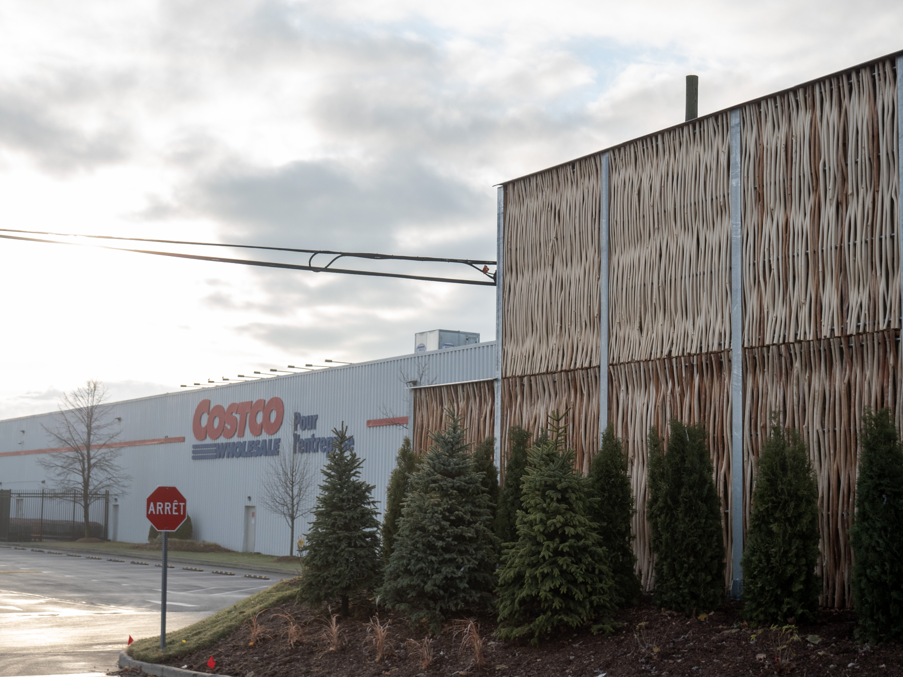
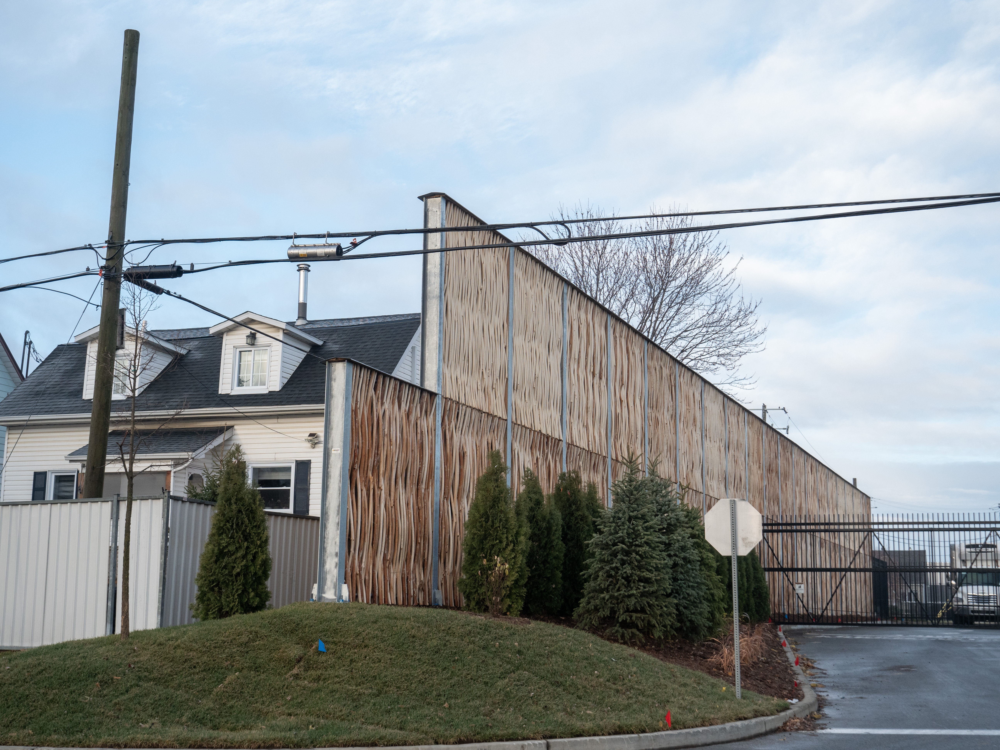
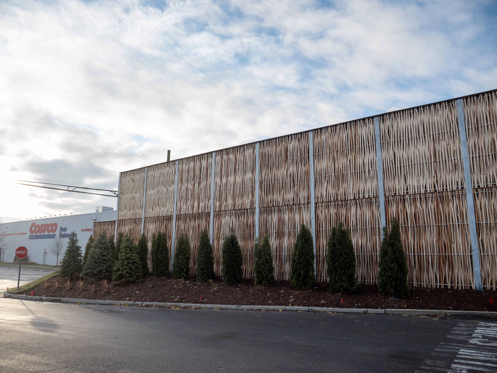

Le contexte
Le centre d'affaires Costco Wholesale de Saint-Hubert générait des nuisances sonores importantes pour les résidences adjacentes situées sur la rue Star.
Les principales sources de bruit identifiées :
- camions réfrigérés
- compresseurs diesel
- manœuvres de remorques
- alarmes de recul
Les analyses acoustiques démontraient des niveaux sonores atteignant 66 à 67 dBA aux limites résidentielles voisines.
Le seuil maximal permis par la Ville de Longueuil était de 53 dBA.
La solution mise en place
Ramo a conçu, fabriqué et installé un mur antibruit absorbant à double façade en saule écorcé. Le système repose sur :
- une structure porteuse en acier galvanisé
- des panneaux absorbants intégrant laine minérale
- un parement extérieur en saule écorcé
Dans une version plus récente du système (Pilebyg Classic), la configuration type inclut des poteaux HSS galvanisés, des panneaux absorbants, une finition végétale en saule et un couronnement métallique.
Le mur agit principalement par absorption et atténuation de la propagation sonore.

Résultats et performance
Les simulations et validations acoustiques démontrent que l'écran permet d'atteindre le critère municipal applicable aux zones résidentielles adjacentes.
Le mur agit par
- absorption acoustique
- effet barrière
- réduction directe de la propagation sonore des compresseurs réfrigérés

Co-bénéfices
Maintien des opérations
Maintien des activités logistiques intensives sans relocalisation des opérations.
Réduction des nuisances
Réduction directe des impacts sonores sur le voisinage résidentiel adjacent.
Intégration architecturale
Finition supérieure à un écran conventionnel en béton — combinaison mélèze + saule tressé.
Acceptabilité sociale
Solution mieux acceptée par les riverains, améliorant la cohabitation entre l'activité commerciale et le quartier.


Lecture technique du projet
Un enjeu similaire ?
Contactez-nous.
Notre équipe est disponible pour discuter de vos besoins et vous proposer la solution adaptée.